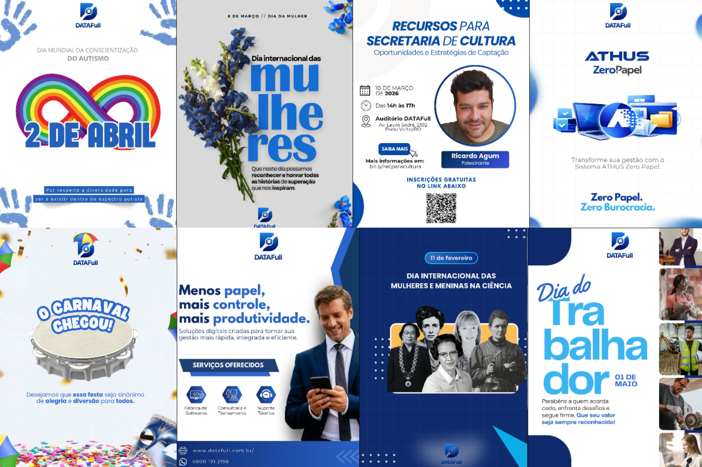
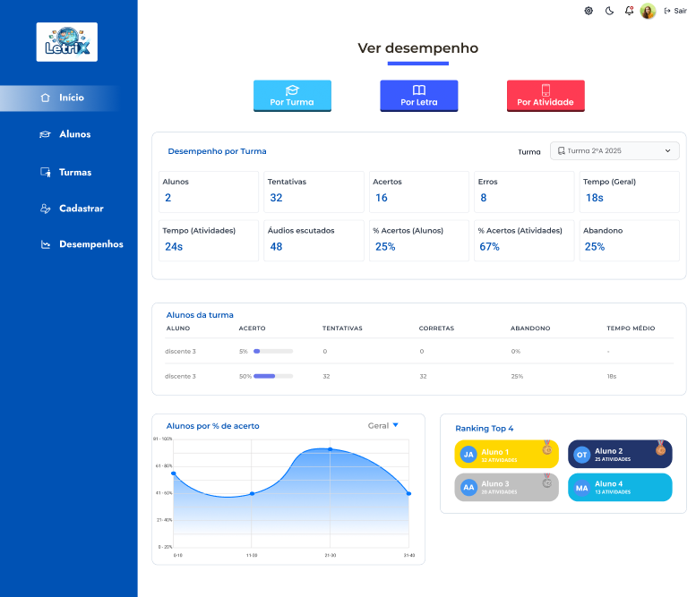
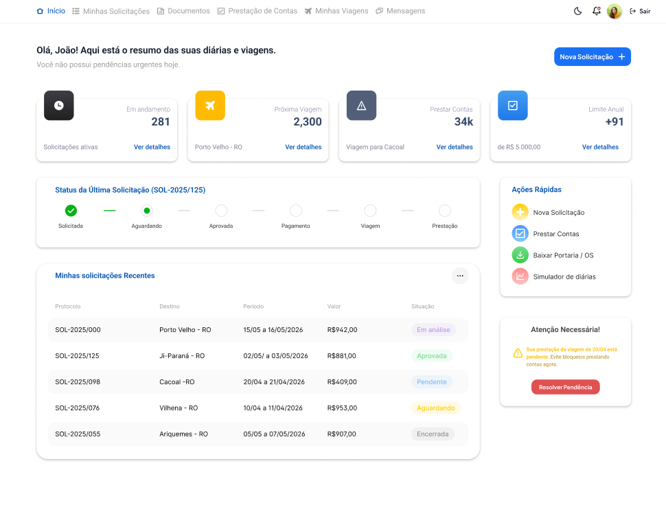
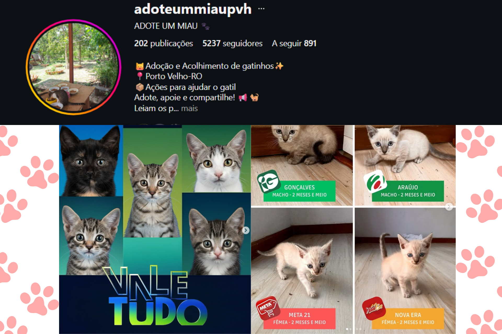

Crio experiências visuais que conectam marcas e pessoas — de interfaces intuitivas a peças gráficas que param o scroll.
Designer UX/UI e Desenvolvedora Front-end em formação, com experiência na criação de interfaces, identidade visual e conteúdo para mídias digitais. Meu foco é desenvolver soluções que unam estética, usabilidade e objetivos de negócio, transformando ideias em experiências claras e funcionais. Atualmente atuo em projetos de design e desenvolvimento web, participando desde a concepção visual até a implementação das interfaces. Busco criar produtos intuitivos, acessíveis e alinhados às necessidades dos usuários.
Tenho experiência em design para redes sociais, interfaces digitais, identidade visual e desenvolvimento web. Busco sempre unir criatividade e estratégia em cada projeto.
Domino o processo do conceito à entrega — visual, interação e código.
Criação de peças para redes sociais, cartazes, banners e materiais de comunicação visual com identidade consistente.
Prototipagem e design de interfaces digitais centradas no usuário, de wireframes de baixa fidelidade até telas finais.
Criação de sites e portais HTML/CSS funcionais e responsivos, transformando designs em páginas reais.
Desenvolvimento de elementos visuais que refletem a personalidade e os valores de marcas e projetos.

Criação de peças visuais para Instagram e LinkedIn, incluindo campanhas institucionais, divulgação de eventos, datas comemorativas e materiais promocionais, mantendo a identidade visual da marca e fortalecendo sua presença digital.

Prototipagem e desenvolvimento de interface com foco na experiência do usuário, navegação intuitiva e acessibilidade, criando uma solução moderna voltada ao processo de alfabetização.

Desenvolvimento de portal web responsivo voltado à consulta de informações públicas, com foco em acessibilidade, organization de dados, filtros de busca e experiência intuitiva para o usuário.

Trabalho voluntário no perfil @adoteummiau, criando conteúdos para redes sociais com o objetivo de ampliar o alcance do projeto e incentivar adoções e doações.
Do briefing à entrega, cada etapa tem um propósito.
Mergulho no briefing, estudo o público, a marca e os objetivos antes de qualquer traço.
Esboços, moodboards e referências — transformo conceitos em direções visuais concretas.
Do wireframe ao design final, com atenção a cada detalhe de tipografia, cor e hierarquia.
Feedback é parte do processo. Refino até que o resultado faça sentido pra quem vai usar.
Arquivos organizados, bem nomeados e prontos para todos os formatos necessários.
Seja para uma vaga, uma parceria ou um projeto — me chama! Adoro colaborar e criar coisas novas.